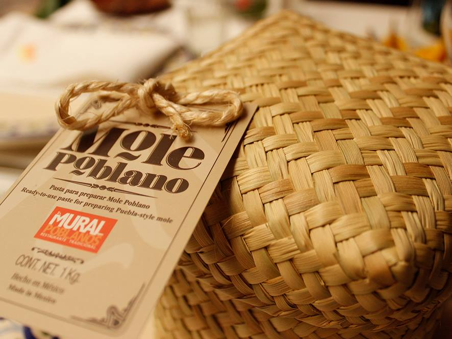

Liz Galicia was born in Puebla, where she studied at the Swiss Institute of Gastronomy and Hospitality. After graduating in 2008, she began to gain experience working in restaurants and hotels in Mexico and abroad.
It is in 2010 that Liz joins the restaurant El Mural de los Poblanos occupying the position of Executive Chef. Liz has dedicated an important part of her time to investigate the culinary traditions of the different regions in the State of Puebla, in order to collect and interpret the recipes of authentic Poblano cuisine.
Liz has also been concerned with using artisanal methods in the preparation of her dishes. She also promotes the use of local ingredients. Prestigious publications such as Travel + Leisure México and the Mexico Gastronomic Guide 2017, recognize the restaurant El Mural de los Poblanos as one of the best restaurants in the country.
In addition, chef Galicia regularly participates in the most prestigious gastronomic festivals in Mexico and the United States. Returning to the 10th Anniversary of La Feria de Los Moles 2017.
